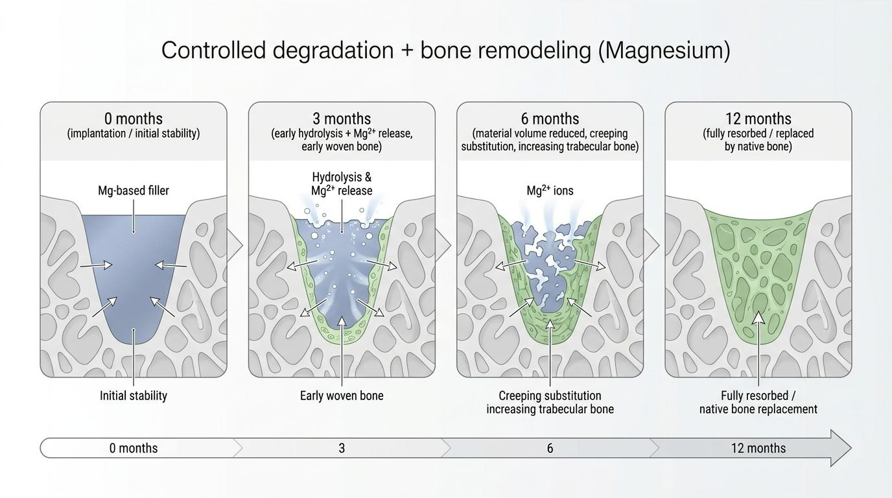
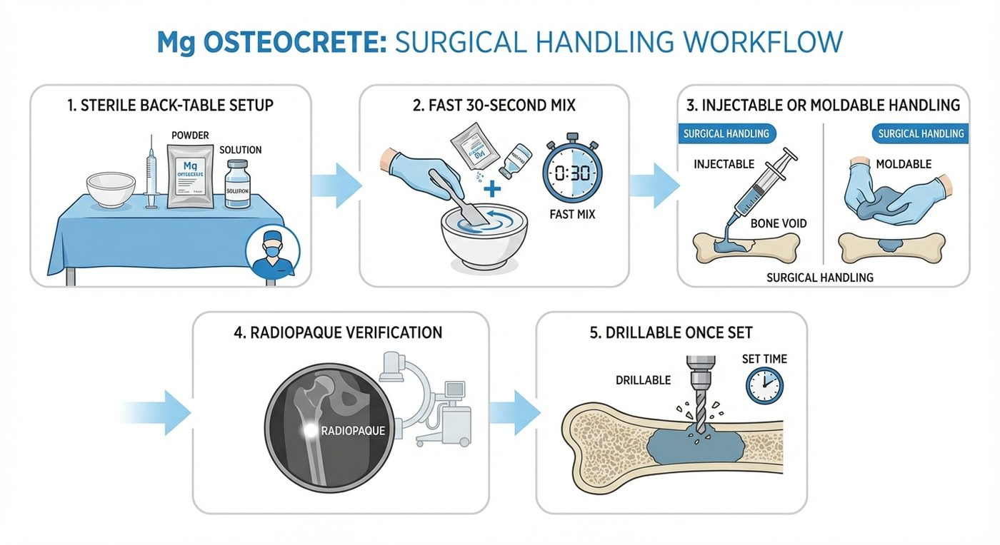

Mg OsteoCrete
The only magnesium bone void filler in orthopedics. It fills the defect, bonds to bone and hardware, then resorbs and remodels into the patient’s own bone on a documented timeline.

of the body’s magnesium lives in the skeleton. Bone already knows this material.
greater screw-anchoring strength than PMMA in bench testing.1
to set for Mg OsteoInject, through an 11-gauge needle.
serial radiographs show replacement by remodeled bone.2
Mg OsteoCrete® and Mg OsteoInject®
It fills
Putty for open defects and hardware augmentation, paste through a cannula, and OsteoInject through a needle for subchondral work.
It holds
Once set it bonds to bone and metal. Adhesive and cohesive, not brittle like a ceramic.
It resorbs
Magnesium resorbs on a predictable timeline and is replaced by remodeled bone.
It is non-reactive
A low-exotherm set, and an ion the skeleton uses every day.
From void to bone.
Fill and set
Mixed in about 30 seconds, delivered, set in minutes. Drillable and radiopaque.
Integration
Material bonds to bone and hardware while load is carried.
Remodeling
Resorption proceeds as new bone forms.
Bone
Serial radiographs show replacement by remodeled bone.


Where it serves.
“Delayed resorption, if ever. Nidus for long term infection. Does not incorporate into bone. Does not stimulate remodeling.”
Robert Wetzel, MDOrthopedic trauma, UH Cleveland Medical Center, on calcium phosphates
- Foot and ankle. Calcaneal and lateral malleolar fractures, osteotomy and fusion sites, talar subchondral defects and cysts, insufficiency fractures.
- Subchondral pathology. Percutaneous OsteoInject delivery into bone marrow edema and lesions.
- Trauma augmentation. Metaphyseal voids and osteoporotic bone. Cleared as an adjunct to hardware fixation.
- Pediatric bone cysts. FDA cleared for patients aged six and older as of October 2025.
- Bone Solutions bench data, screw-anchoring strength versus PMMA.
- Serial radiographic follow-up to 12 months, Bone Solutions.
- FDA 510(k) K251522, October 2025: Mg OsteoInject, Mg OsteoRevive and Mg OsteoCrete. See the manufacturer’s IFU for full indications, contraindications and warnings.
Bring Mg OsteoCrete to your next case.
Lotus Medical brings the technology, the clinical data and the support into the room, for every case.
Scott Stojetz · 513-317-6971 · John Callahan · 330-858-6718